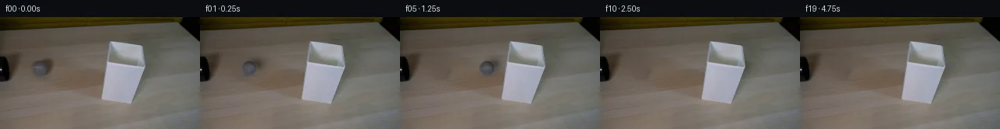
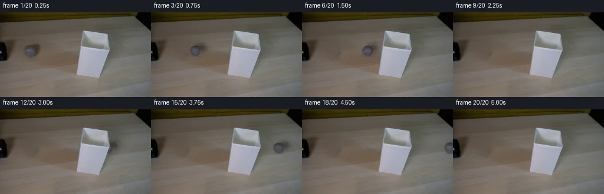
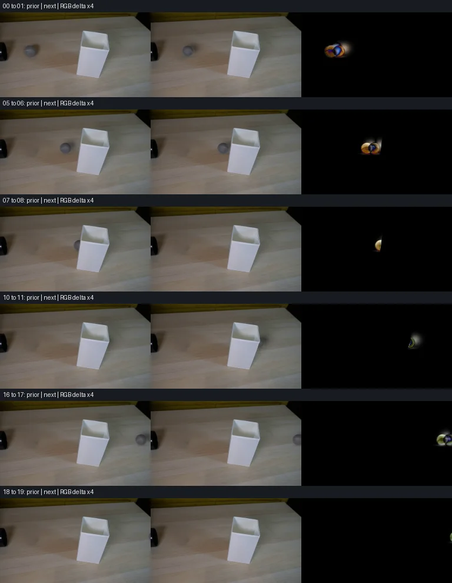

V0 · 初版 · 最终提交
![]()
Observable Generation Trace
把最终像素视频、Harness 冻结的每轮候选、真实工具事件和 Agent 自述放在同一页。可观测证据与模型自述分开标记，避免把“模型说它检查过”误当成真实工具调用。
![首帧]()
Static locked-off single-shot with fixed frame throughout filmed with constant framerate in real-time. The scene shows a realistic scientific demonstration. The scene only contains the described setup and actions. A small white lampshade is on a light wooden table and a black tube points from the left side to the right side. The grey tennis ball rolls from the left straight out of the black tube over the entire table.
首帧显示在左侧播放器初始画面。Track 权限、隔离和 tensor 一致性来自 run manifest，而不是 METHOD.md。
默认勾选初版和最终版；可选其他版本一起同步播放。仅检查图更新的连续重复快照已合并，回退旧视频仍保留为一次修订。
Observable events
来源：events.jsonl + run manifest
此 Track 禁止读取输出图片。逐轮预览由外部 Harness 自动冻结，只用于事后审计，生成 Agent 当时看不到这些页面。
Frozen candidates
每张图来自该 round 的真实 00 / 01 / 05 / 10 / 19 帧

pixels d45b951b51a3ae90 · code 876f038be8f9494f
--- previous/generate.py
+++ current/generate.py
@@ -0,0 +1,238 @@
+"""Deterministic local pixel continuation; no image-view tools or models.
+
+Run from this workspace: python generate.py
+"""
+from pathlib import Path
+import json
+import base64
+import numpy as np
+from PIL import Image, ImageDraw
+from scipy import ndimage, sparse
+from scipy.sparse.linalg import spsolve
+from artifact_io import save
+
+ROOT = Path(__file__).resolve().parent
+W, H, COUNT, FPS = 256, 144, 20, 4
+SOURCE = np.asarray(Image.open(ROOT / 'first_frame.png').convert('RGB'))
+Y, X = np.mgrid[:H, :W].astype(float)
+CX, CY, RX, RY = 50.6, 65.7, 10.5, 9.8
+AXIS = np.array([0.0, 0.60, 0.80])
+
+
+def smoothstep(a, b, x):
+ q = np.clip((x - a) / (b - a), 0, 1)
+ return q * q * (3 - 2 * q)
+
+
+def position(time):
+ return CX + 49.0 * time - 0.45 * time * time
+
+
+def reconstruct_table():
+ """Harmonic interpolation constrained by real neighboring wood pixels."""
+ ball = ((X - CX) / 12.7) ** 2 + ((Y - CY) / 12.1) ** 2
+ old_shadow = ((X - 59.7) / 12.5) ** 2 + ((Y - 59.5) / 11.0) ** 2
+ region = (np.minimum(ball, old_shadow) < 1.0)
+ coords = np.argwhere(region)
+ lookup = np.full((H, W), -1, int)
+ lookup[region] = np.arange(len(coords))
+ rows, cols, vals = [], [], []
+ rhs = np.zeros((len(coords), 3))
+ source_float = SOURCE.astype(float)
+ # Background boundaries remain exact, and no tube pixels enter the region.
+ for idx, (y, x) in enumerate(coords):
+ rows.append(idx); cols.append(idx); vals.append(4.0)
+ for dy, dx in ((-1, 0), (1, 0), (0, -1), (0, 1)):
+ yy, xx = y + dy, x + dx
+ neighbor = lookup[yy, xx]
+ if neighbor >= 0:
+ rows.append(idx); cols.append(neighbor); vals.append(-1.0)
+ else:
+ rhs[idx] += source_float[yy, xx]
+ matrix = sparse.csr_matrix((vals, (rows, cols)), shape=(len(coords), len(coords)))
+ result = source_float.copy()
+ for c in range(3):
+ result[region, c] = spsolve(matrix, rhs[:, c])
+ # Reuse fine texture from nearby bare wood, keeping its original RGB coupling.
+ grain = source_float - ndimage.gaussian_filter(source_float, (0.8, 0.8, 0))
+ borrowed = np.roll(grain, -26, axis=0)
+ inside = ndimage.distance_transform_edt(region)
+ result += borrowed * (0.45 * smoothstep(0, 4, inside))[..., None]
+ result[~region] = source_float[~region]
+ return np.clip(result, 0, 255), region
+
+
+BACKGROUND, CLEAN_REGION = reconstruct_table()
+
+
+def shadow(cx):
+ # Source's cast shadow lies to the upper right; short contact shadow below.
+ cast = np.exp(-0.5 * (((X - cx - 8.7) / 6.8) ** 2 + ((Y - CY + 5.2) / 5.7) ** 2))
+ contact = np.exp(-0.5 * (((X - cx - 0.5) / 6.2) ** 2 + ((Y - CY - 8.8) / 1.1) ** 2))
+ opacity = 1.0 - (1.0 - 0.43 * cast) * (1.0 - 0.19 * contact)
+ # Finite support prevents changes to the whole photograph from Gaussian tails.
+ opacity[opacity < 0.0025] = 0.0
+ return opacity
+
+
+# The original silhouette and surface samples calibrate the moving sphere.
+U = (X - CX) / RX
+V = (Y - CY) / RY
+R = np.sqrt(U * U + V * V)
+ALPHA0 = 1.0 - smoothstep(0.87, 1.09, R)
+UNDER0 = BACKGROUND * (1.0 - shadow(CX)[..., None])
+SURFACE = (SOURCE.astype(float) - UNDER0 * (1.0 - ALPHA0[..., None])) / np.maximum(ALPHA0[..., None], 0.05)
+SURFACE = np.clip(SURFACE, [40, 40, 43], [119, 122, 131])
+Z = np.sqrt(np.maximum(0.0, 1.0 - U * U - V * V))
+FEATURES = np.stack([np.ones_like(U), U, V, Z, U * V, U * Z, V * Z, U * U, V * V], axis=-1)
… diff truncated; 151 more lines …pixels d45b951b51a3ae90 · code 7d063d27bb0dec84
--- previous/generate.py
+++ current/generate.py
@@ -216,7 +216,16 @@
for i in range(COUNT):
ys, xs = np.where(changed[i])
summaries.append({'frame': i, 'time_seconds': i / FPS, 'center_xy': [round(position(i/FPS), 4), CY], 'visible_ball_alpha_area': round(float(masks[i].sum()), 2), 'changed_pixels_from_source': int(changed[i].sum()), 'change_bbox': [int(xs.min()), int(ys.min()), int(xs.max()), int(ys.max())] if len(xs) else None, 'png_bytes': png_bytes[i]})
- report = {'frames': COUNT, 'fps': FPS, 'duration_seconds': 5, 'tensor_shape': list(packed.shape), 'tensor_dtype': str(packed.dtype), 'packing': '0xRRGGBB', 'source_frame_exact': True, 'all_png_tensor_matches': True, 'html_delta_decode_matches': True, 'static_region_exact': True, 'lampshade_core_exact': True, 'inspection_method': 'local numeric RGB and array checks; no image viewer', 'frame_measurements': summaries}
+ calibration, _ = render(0.0)
+ core = R < 0.80
+ calibration_error = np.abs(calibration.astype(float)[core] - SOURCE.astype(float)[core])
+ centers = np.array([position(i / FPS) for i in range(COUNT)])
+ assert np.all(np.diff(centers) > 0)
+ assert masks[8].sum() == masks[9].sum() == masks[10].sum() == masks[19].sum() == 0
+ for artifact, expected_size in [('inspection.png', (1024, 330)), ('transition_check.png', (768, 990))]:
+ with Image.open(ROOT / artifact) as im:
+ assert im.mode == 'RGB' and im.size == expected_size
+ report = {'source_calibration_core_mean_absolute_rgb_error': round(float(calibration_error.mean()), 4), 'monotonic_rightward_motion': True, 'ball_fully_occluded_frames': [8, 9, 10], 'ball_outside_frame_at_end': True, 'contact_sheets_verified': True, 'frames': COUNT, 'fps': FPS, 'duration_seconds': 5, 'tensor_shape': list(packed.shape), 'tensor_dtype': str(packed.dtype), 'packing': '0xRRGGBB', 'source_frame_exact': True, 'all_png_tensor_matches': True, 'html_delta_decode_matches': True, 'static_region_exact': True, 'lampshade_core_exact': True, 'inspection_method': 'local numeric RGB and array checks; no image viewer', 'frame_measurements': summaries}
(ROOT / 'verification.json').write_text(json.dumps(report, indent=2) + '\n')
print(json.dumps(report, indent=2))
pixels d45b951b51a3ae90 · code 0a929918586d4091
--- previous/generate.py
+++ current/generate.py
@@ -221,7 +221,7 @@
calibration_error = np.abs(calibration.astype(float)[core] - SOURCE.astype(float)[core])
centers = np.array([position(i / FPS) for i in range(COUNT)])
assert np.all(np.diff(centers) > 0)
- assert masks[8].sum() == masks[9].sum() == masks[10].sum() == masks[19].sum() == 0
+ assert all(masks[i].sum() < 0.001 for i in [8, 9, 10, 19])
for artifact, expected_size in [('inspection.png', (1024, 330)), ('transition_check.png', (768, 990))]:
with Image.open(ROOT / artifact) as im:
assert im.mode == 'RGB' and im.size == expected_sizeFinal visual checks
Harness 保存的最终产物


Agent claims
以下文字由生成 Agent 撰写，不等同于工具证据
The source was inspected only by local Python/Pillow/NumPy RGB sampling and numeric row boundary reports. No image Read/View tool or visual review was used. Coordinates below are source pixels with (0,0) at the upper left.
Twenty samples at 4 fps cover a five-second clip (sample times 0 through 4.75 seconds). Frame 00 is copied exactly. Subsequent ball centers follow x(t)=50.6+49t−0.45t², y(t)=65.7, with a slight, physically plausible rolling resistance. Rotation is clockwise as viewed in the image and derives from distance travelled divided by radius. The ball remains supported by the table; no bounce, interaction, added objects, or camera motion is planned. It exits the right frame boundary after traversing the visible tabletop. Soft shadows move with it. Partial occlusion is inferred from the measured lampshade footprint.
| Frame | Time (s) | Center x | Event |
|---|---|---|---|
| 00 | 0.00 | 50.60 | Exact source, ball just beyond tube |
| 01 | 0.25 | 62.82 | Rolling right, initial location uncovered |
| 02 | 0.50 | 74.99 | Clear of tube |
| 03 | 0.75 | 87.10 | Continuous rightward roll |
| 04 | 1.00 | 99.15 | Continuous rightward roll |
| 05 | 1.25 | 111.15 | Approaching lampshade |
| 06 | 1.50 | 123.09 | Right edge starts disappearing behind shade |
| 07 | 1.75 | 134.97 | Partially hidden at shade's left boundary |
| 08 | 2.00 | 146.80 | Hidden by shade |
| 09 | 2.25 | 158.57 | Hidden by shade |
| 10 | 2.50 | 170.29 | Hidden by shade |
| 11 | 2.75 | 181.95 | Right side emerges from behind shade |
| 12 | 3.00 | 193.55 | Mostly clear of shade |
| 13 | 3.25 | 205.10 | Rolling across right side |
| 14 | 3.50 | 216.59 | Continuous rightward roll |
| 15 | 3.75 | 228.02 | Continuous rightward roll |
| 16 | 4.00 | 239.40 | Approaching right frame boundary |
| 17 | 4.25 | 250.72 | Partly outside frame |
| 18 | 4.50 | 261.99 | Last small part leaves frame |
| 19 | 4.75 | 273.20 | Ball outside frame; static setup remains |
Use only local pixel synthesis: smoothly reconstruct the small ball/shadow patch from adjacent wood pixels, extract the ball's source silhouette/grey appearance, and animate a shaded sphere with rotating surface detail. Restore foreground lampshade pixels over the ball and shadow. Save the packed uint32 0xRRGGBB tensor and all required PNG/player/documentation artifacts. Verify frame 00 equality, PNG/tensor equality, dimensions, finite deterministic trajectory, local change bounds, exact static-scene pixels, and HTML frame decoding. Produce an inspection contact sheet and a transition diagnostic; these are saved artifacts, not claimed visual reviews.
This is a deterministic, local pixel synthesis of the continuation described in prompt.txt. It uses the supplied first frame, NumPy, Pillow, and SciPy. No network access, external images, pretrained model, physics/rendering engine, subagent, or image Read/View tool was used. Source inspection and output review were limited to numeric RGB sampling, segmentation boundaries, and array measurements. The saved contact sheets were not visually reviewed.
generate.py: reproducible synthesis and verification; run python generate.py from this workspace.pixels.npz: key pixels, shape (144,256,20), dtype uint32, value 0xRRGGBB.frames/00.png through frames/19.png: the twenty RGB images.inspection.png: eight-frame contact sheet, 1024×330.transition_check.png: six consecutive-frame comparisons with amplified absolute RGB differences, 768×990.index.html: self-contained canvas player with embedded packed pixels, delta reconstruction, play/pause, replay, seek, and loop controls. No remote resources.OBSERVATION.md: numerical source measurements and the pre-implementation twenty-frame event plan.verification.json: machine-readable verification results and per-frame movement/occlusion/change measurements.All twenty PNGs match their packed tensor slices exactly. Frame 00 equals the source exactly. The standalone HTML's first-frame and delta packets decode to the same tensor. The tube and pixels outside the local motion band remain exact, and 3,353 pixels in the lampshade's protected core remain exact in every frame. Both diagnostic images have the required RGB format and expected dimensions. The center advances monotonically and the measured visible ball mask agrees with the planned occlusion and final exit.
As a calibration check, the generated stationary ball's central RGB pixels differ from the photographed ball by a mean absolute 0.81 channel levels. This check does not alter the exact source frame. Moving-frame core samples remain in the measured dim grey color range. The physical scale, unseen surface texture, camera elevation, shade depth ordering, rolling resistance, and shutter exposure are inferred from the single photograph and the text; they are not measurements from an original video. The contact sheets are provided for human inspection, with no claim of visual review.